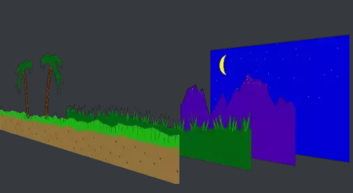
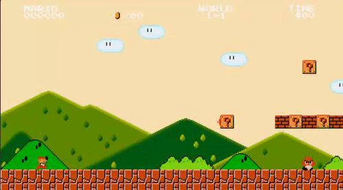

Hello everyone!
I've been working on a parallax background where I take 3 VT100 images, overlap them properly(this is the problem), and display so where each image is basically "further" than the prior. (picture below)

But overlapping isn't as easy as plotting on top of the last image, there are objects, but then also a background of BLACK that needs to be ignored, and showing the image behind it. Much like the gif shows below.

Please forgive me, for I'm unsure how to properly word my questioning.
Let's say I have this image below in an array called %template[LINES]% and this is the image below when directed to STDOUT.
But the problem is the background is black, but it cannot be. It needs to be the blue sky and clouds (whichever position they are in, since they will be a scrolling background)
Are there any methods, ideas, names for this concept? I need the education on this subject for my own enthusiasm!
Thank you very much for your time.
Parallax background, and overlapping images properly
Moderator: DosItHelp
-
IcarusLives
- Posts: 92
- Joined: 17 Jan 2016 23:55
Re: Parallax background, and overlapping images properly
The best way to achieve this heavily depends on the algorithm you are using to draw your images.
Usually you are using "alpha blending" (each pixel stores an alpha value between 0 (transparent) to !0 (opaue)) to overlap images correctly.
When using two opacity levels (transparent, opaque) only, you might better want to use "image masks" (overlapping is stored in another image); especially when you easily could compute it from your image.
Another option is to simply not draw black when plotting the image; if you are using VT100 escape sequences you could set the cursor instead to jump over black foreground.
penpen
Usually you are using "alpha blending" (each pixel stores an alpha value between 0 (transparent) to !0 (opaue)) to overlap images correctly.
When using two opacity levels (transparent, opaque) only, you might better want to use "image masks" (overlapping is stored in another image); especially when you easily could compute it from your image.
Another option is to simply not draw black when plotting the image; if you are using VT100 escape sequences you could set the cursor instead to jump over black foreground.
penpen
Re: Parallax background, and overlapping images properly
The important thing to understand is that your screen isn't layered. That means things like background and foreground is something that your brain makes of the 2D picture on the screen. I think calculating transparent images is too much for batch. But you have to begin with the background. Then you need to replace the background pixels by the pixels that you want to have in the foreground. And if you have something that is even more in the foreground then you have to replace the pixels of the formerly calculated picture. I think to achieve this something like the alpha channel that penpen mentioned should be helpful because you have to mark the pixels that have to replace the background pixels while other pixels (e.g. your black pixels in your foreground) need to be ignored. Certainly thats a lot of efforts and makes it very slow if you do everything in batch.
I have to admit that I'm not a gamer and I still believe that trying to make a console window a GUI is a waste of time. But certainly it's a good exercise ...
Steffen
I have to admit that I'm not a gamer and I still believe that trying to make a console window a GUI is a waste of time. But certainly it's a good exercise ...
Steffen
-
IcarusLives
- Posts: 92
- Joined: 17 Jan 2016 23:55
Re: Parallax background, and overlapping images properly
The only thing I can think of is to draw the closest image first, instead of last.
This is because if we draw it first, we can then say "within this area, if the pixel is NOT already colored, place this new pixel for this new image here, otherwise, check the next pixel"
Surely this method is slow, considering it needs to check every single pixel. VT100 has surprised me numerous times, however, so I remain hopeful!
This is because if we draw it first, we can then say "within this area, if the pixel is NOT already colored, place this new pixel for this new image here, otherwise, check the next pixel"
Surely this method is slow, considering it needs to check every single pixel. VT100 has surprised me numerous times, however, so I remain hopeful!
Re: Parallax background, and overlapping images properly
No you don't draw anything before you calculated the whole image in memory. If you draw the foreground only (that may move as shown in your example), how would you update the missing background? I'm afraid that's even more of calculation but I might be wrong.
Steffen
Steffen
Re: Parallax background, and overlapping images properly
I believe there is only one possibility for producing an effective pure batch scrolling game - Every single frame (screen) of the static parallax background must be precomputed and stored, one frame per file. So for any background scroll position BG(x,y), there would be a file containing the escape sequences to generate the precomputed background image. For performance purposes, the masking should already have been computed so that each background "pixel" is represented only once. Obviously this design will result in a huge number of files.
The dynamic foreground images must then be superimposed on top of each static background frame. For each refresh cycle, you would need to compute your BG(x,y) position, retrieve the appropriate background file, and then superimpose your computed foreground images. I see two possible ways to do this.
1) The simplest method would be to simply TYPE the background image, and then use escape sequences to draw each foreground sprite in the correct screen position S(x,y). This would be the fastest option because it requires the least string manipulation, and it minimizes the number of bytes in the background image (less info to write to the console). But this would cause significant flicker with the foreground sprites. I'm guessing the flicker would be too much for my taste. I think it would severely limit my enjoyment of the game. But I can see how the frame rate might be pretty good.
2) The other option is to use the approach I used in my latest version of BALLS.BAT. Each final frame to be displayed would consist of a series of strings, one string per horizontal line. Each pixel within a line would need to have a constant width that contains color and character information, so that you can effectively replace the static background pixels with the dynamic foreground pixels. The number of horizontal lines per frame is a constant, so you can use a FOR /L loop coupled with SET /P to read each line of the background into an array of variables that can then be manipulated to insert the foreground. Once the entire frame has been built, it would then be written to the console, and there would be no flicker.
As much as possible, the static foreground scaffold that the dynamic sprites interact with could be included somehow in each background file, but I have no idea what that data structure would look like.
The absence of flicker would be great, but the amount of string manipulation required would slow things down considerably. And having color escape sequences (perhaps both foreground and background) for every single pixel will dramatically increase the amount of info to be written to the console, which also will slow things down. I'm guessing that the frame rate will be pretty poor, perhaps to the point that the game is not enjoyable.
The dynamic foreground images must then be superimposed on top of each static background frame. For each refresh cycle, you would need to compute your BG(x,y) position, retrieve the appropriate background file, and then superimpose your computed foreground images. I see two possible ways to do this.
1) The simplest method would be to simply TYPE the background image, and then use escape sequences to draw each foreground sprite in the correct screen position S(x,y). This would be the fastest option because it requires the least string manipulation, and it minimizes the number of bytes in the background image (less info to write to the console). But this would cause significant flicker with the foreground sprites. I'm guessing the flicker would be too much for my taste. I think it would severely limit my enjoyment of the game. But I can see how the frame rate might be pretty good.
2) The other option is to use the approach I used in my latest version of BALLS.BAT. Each final frame to be displayed would consist of a series of strings, one string per horizontal line. Each pixel within a line would need to have a constant width that contains color and character information, so that you can effectively replace the static background pixels with the dynamic foreground pixels. The number of horizontal lines per frame is a constant, so you can use a FOR /L loop coupled with SET /P to read each line of the background into an array of variables that can then be manipulated to insert the foreground. Once the entire frame has been built, it would then be written to the console, and there would be no flicker.
As much as possible, the static foreground scaffold that the dynamic sprites interact with could be included somehow in each background file, but I have no idea what that data structure would look like.
The absence of flicker would be great, but the amount of string manipulation required would slow things down considerably. And having color escape sequences (perhaps both foreground and background) for every single pixel will dramatically increase the amount of info to be written to the console, which also will slow things down. I'm guessing that the frame rate will be pretty poor, perhaps to the point that the game is not enjoyable.
-
IcarusLives
- Posts: 92
- Joined: 17 Jan 2016 23:55
Re: Parallax background, and overlapping images properly
I really appreciate all of the feedback!
I was afraid the performance would turn out to be too poor to enjoy, but I just couldn't help but at least see what I can do. Perhaps I'll just backburner this idea for a while.
I was afraid the performance would turn out to be too poor to enjoy, but I just couldn't help but at least see what I can do. Perhaps I'll just backburner this idea for a while.
Re: Parallax background, and overlapping images properly
Hi Icarus,
do you can put your ppm files somewhere, so we can play with them?
do you can put your ppm files somewhere, so we can play with them?
-
IcarusLives
- Posts: 92
- Joined: 17 Jan 2016 23:55
Re: Parallax background, and overlapping images properly
Re: Parallax background, and overlapping images properly
I just noticed my post in your other thread also shows the overlapping technique i called "simply not draw black pixels", but i have created the image out of an artwork i made - but the process should be rather the same; see:
viewtopic.php?f=3&t=8493&p=56409#p56409
penpen
viewtopic.php?f=3&t=8493&p=56409#p56409
penpen
Re: Parallax background, and overlapping images properly
I used your sample files cloud1.ppm and mountain1.ppm.
This batch demo shows that you can overlay two different images in real time (7 FPS).
I'm using pre cached files to avoid the long converting time from RGB to escape sequences.
And for combining two images, I precompute a run length encoded array for faster copying the relevant parts
This batch demo shows that you can overlay two different images in real time (7 FPS).
I'm using pre cached files to avoid the long converting time from RGB to escape sequences.
And for combining two images, I precompute a run length encoded array for faster copying the relevant parts
Code: Select all
@echo off & setlocal enableDelayedExpansion
REM INIT
for /F %%a in ('echo prompt $E^| cmd') do set "ESC=%%a"
(set LF=^
%=empty=%
)
REM *** pixelPerLine pixelPerLine*20 must be less then 8191
REM *** Currently it should be the same as the image width
set pixelPerLine=100
REM *** Clear Screen
<nul set /p ".=%ESC%[2J%ESC%[H"
call :readImage cloud1
call :readImage mountain1
call :createRLE mountain1
REM *** Draw the image and move the mountain up/down between 0 to 6 lines
set "dir=1"
set /a "offset=0"
for /L %%n in (1 1 100) do (
if defined dir (
set /a offset+=1
if !offset! GEQ 10 (
set "dir="
)
) else (
set /a offset-=1
if !offset! EQU -5 (
set "dir=1"
)
)
call :copyImage cloud1 img
call :combineRLE mountain1 img !offset!
call :display img
<nul set /p ".=%ESC%[H%%n - !offset!"
)
exit /b
:readImage
REM *** First check if a cached version exists, this is MUCH faster
set "preConfig=REM !pixelPerLine!"
set "preCachedFile=%~1.pre.bat"
if exist %preCachedFile% (
< "%preCachedFile%" set /p line=
if "!line!" == "!preConfig!" (
call %preCachedFile%
exit /b
)
)
set startTime=%time%
REM Parse height and width from PPM, and obtain headerSize
set "image=%~1.ppm"
for %%a in (%image%) do set "imageFileSize=%%~za"
if exist %image% ( if /i "%image:~-3%" equ "ppm" ( for /f "tokens=*" %%a in (%image%) do (
set "str=X%%~a" & set "length=0"
for /l %%b in (5,-1,0) do ( set /a "length|=1<<%%b"
for /f "tokens=*" %%c in ("!length!") do if "!str:~%%c,1!" equ "" set /a "length&=~1<<%%b" )
set /a "headerSize+=length + 1"
if !i! equ 1 for /f "tokens=1,2" %%b in ("%%a") do ( set "o=%%b"
if "!o:~0,1!" neq "#" set /a "width=%%b", "height=%%c" )
if !i! equ 2 goto :break
set /a "i+=1"
)) else ( echo Format not supported & timeout /t 2 > nul & exit )
) else ( echo File not found & timeout /t 2 > nul & exit )
:break
REM Parse all data from %image% and collect in hex[] up to <maxChars> characters (divisible by 6)
mode %width%,%height%
set /a height+=10
REM *** Set window dimension to height * width
<nul set /p ".=%ESC%[8;%height%;%width%t"
<nul (
for /L %%n in (1 1 %width%) DO (
set "value=%%n"
<nul set /p ".=!value:~-1!"
)
)
echo(%height%;%width%
certutil -f -encodehex "%image%" ppm.hex.tmp > nul
set /a hex_max=0
set /a ignoreNibbles=headerSize*2 %= ignore this amount of hex values =%
set /a maxChars=pixelPerLine*6
set "hex="
for /f "tokens=1,*" %%a in (ppm.hex.tmp) do (
set "line=%%b"
set "line=!line:~0,48!"
set "hex=!hex!!line: =!"
if defined ignoreNibbles (
if "!hex:~%ignoreNibbles%,1!" NEQ "" (
set "hex=!hex:~%ignoreNibbles%!"
set "ignoreNibbles="
)
)
if "!hex:~%maxChars%,1!" NEQ "" (
set "hex[!hex_max!]=!hex:~0,%maxChars%!"
set /a hex_max+=1
set "hex=!hex:~%maxChars%!"
)
<nul set /p ".=%ESC%7Loading %image% (!hex_max!)%ESC%8"
)
if "!hex!" == "" (
set /a hex_max-=1
) ELSE (
set "hex[!hex_max!]=!hex!"
)
set /a %1_cnt=!hex_max!
call :diffTime
call :convertToEscapeSeq %1
call :copy2File %1
exit /b
:diffTime
for /F "tokens=1-8 delims=:.," %%a in ("!startTime: =0!:!time: =0!") do (
set /a "a=(((1%%e-1%%a)*60)+1%%f-1%%b)*6000+1%%g%%h-1%%c%%d, a+=(a>>31)&8640000, diffTime=a*10"
)
echo(%ESC%[30C!diffTime!ms
exit /b
:clearImage <pictureName> <width> <height>
:@TODO
exit /b
:copyImage <pictureName> <dest>
set startTime=%time%
for /L %%n in (0,1,!%1_cnt!) do (
rem <nul set /p ".=%ESC%7copyImage %1 (%%n)%ESC%8"
set "%2[%%n]=!%1[%%n]!"
)
set /a %2_cnt=%1_cnt
rem call :diffTime
exit /b
:copy2File <pictureName>
set startTime=%time%
set "preConfig=REM !pixelPerLine!"
<nul > %1.pre.bat (
(echo !preConfig!)
for /L %%n in (0,1,!%1_cnt!) do (
<nul set /p ".=%ESC%7copyImage %1 (%%n)%ESC%8" > con
echo set "%1[%%n]=!%1[%%n]!"
)
echo set "%1_cnt=!%1_cnt!"
)
call :diffTime
exit /b
REM *** Build a run length encoding for the parts to be copied
REM *** Black is "transparent"
:createRLE <pictureName>
set startTime=%time%
set /a escapeSize=20
set /a maxCount=pixelPerLine*escapeSize
for /L %%n in (0,1,!%1_cnt!) do (
<nul set /p ".=%ESC%7createRLE %1 (%%n)%ESC%8"
set /a startPos=0
set /a len=0
for /L %%a in (0 %escapeSize% %maxCount%) DO (
if "!%1[%%n]:~%%a,%escapeSize%!" EQU "%ESC%[48;2;000;000;000m " (
if !len! EQU 0 (
set /a startPos+=escapeSize
) ELSE (
if defined %1_RLE[%%n] (
set "%1_RLE[%%n]=!%1_RLE[%%n]!#"
)
set /a remain=startPos+len
set "%1_RLE[%%n]=!%1_RLE[%%n]!!startPos!,!len!,!remain!"
set /a startPos=remain
set /a len=0
)
) ELSE (
set /a len+=escapeSize
)
)
if not defined %1_RLE[%%n] (
set "%1_RLE[%%n]=0,0,0"
)
)
call :diffTime
exit /b
REM *** Combines a RLE encoded image into the dest image
:combineRLE <pictureName> <dest>
set startTime=%time%
set /a combine.add=%3
set /a maxLine=%1_cnt
if !combine.add! LEQ 0 set /a maxLine-=combine.add
FOR %%L in ("!LF!") DO (
for /L %%n in (0,1,%maxLine%) do (
REM <nul set /p ".=%ESC%7combineRLE %1 (%%n)%ESC%8"
set /a image.offset=%%n+combine.add
if !image.offset! GEQ 0 (
if !image.offset! LEQ !%1_cnt! (
for /F %%o in ("!image.offset!") DO (
FOR /F "tokens=1-3 delims=," %%a in ("!%1_RLE[%%o]:#=%%~L!") DO (
set "%2[%%n]=!%2[%%n]:~0,%%a!!%1[%%o]:~%%a,%%b!!%2[%%n]:~%%c!"
)
)
)
)
)
)
REM call :diffTime
exit /b
REM *** Combines an image into the dest image, is VERY SLOW
:combine <pictureName> <dest>
set startTime=%time%
set /a escapeSize=14
set /a lineLen=pixelPerLine*escapeSize
(
for /L %%n in (0,1,!%1_cnt!) do (
rem <nul set /p ".=%ESC%7combine %1 (%%n)%ESC%8"
for /L %%a in (0 14 !lineLen!) DO (
if "!%1[%%n]:~%%a,%escapeSize%!" NEQ "#000;000;000m " (
set /a endPos=%%a+escapeSize
for /F %%E in ("!endPos!") DO (
set "%2[%%n]=!%2[%%n]:~0,%%a!!%1[%%n]:~%%a,%escapeSize%!!%2[%%n]:~%%E!"
)
)
)
)
)
call :diffTime
exit /b
REM *** Combines an image into the dest image, is MEDIUM SLOW
:combine2File <pictureName> <dest>
set startTime=%time%
set /a escapeSize=20
set /a lineLen=pixelPerLine*escapeSize
<nul > %2.tmp (
for /L %%n in (0,1,!%1_cnt!) do (
rem <nul set /p ".=%ESC%7combine %1 (%%n)%ESC%8"
for /L %%a in (0 %escapeSize% !lineLen!) DO (
if "!%1[%%n]:~%%a,%escapeSize%!" EQU "%ESC%[48;2;000;000;000m " (
set /p ".=!%2[%%n]:~%%a,%escapeSize%!"
) ELSE (
set /p ".=!%1[%%n]:~%%a,%escapeSize%!"
)
)
)
)
<nul set /p ".=%ESC%combine2File %1 (%%n)%ESC%8"
call :diffTime
exit /b
REM *** Build the out[] array with color escape sequences for every pixel
:convertToEscapeSeq <pictureName>
set startTime=%time%
set /a maxCount=pixelPerLine*6
for /L %%a in (0,1,%hex_max%) do (
<nul set /p ".=%ESC%7Converting RGB (%%a)%ESC%8" %= Save/restore cursor position =%
set "out="
for /L %%b in (0,6,%maxCount%) do (
set "c=!hex[%%a]:~%%b,6!"
if defined c (
set /a "r=1000+(0x!c:~0,2! & 0xE0)", "g=1000+(0x!c:~2,2! & 0xE0)", "b=1000+(0x!c:~4,2! & 0xE0)"
set "out=!out!%ESC%[48;2;!r:~-3!;!g:~-3!;!b:~-3!m "
)
)
set "%1[%%a]=!out!"
)
call :diffTime
exit /b
:RGB2File <pictureName>
set startTime=%time%
set /a maxCount=pixelPerLine*2-6
<nul > %1.tmp (
for /L %%a in (0,1,%hex_max%) do (
for /L %%b in (0,6,%maxCount%) do (
set "c=!hex[%%a]:~%%b,6!"
if defined c (
set /a "r=1000+(0x!c:~0,2! & 0xF0)", "g=1000+(0x!c:~2,2! & 0xF0)", "b=1000+(0x!c:~4,2! & 0xF0)"
set /p ".=%ESC%[48;2;!r:~-3!;!g:~-3!;!b:~-3!m "
)
)
)
)
<nul set /p ".=%ESC%7Converting RGB (%%a)%ESC%8" %= Save/restore cursor position =%
call :diffTime
exit /b
:display <pictureName> <offset>
set startTime=%time%
<nul (
REM *** Hide cursor, Set cursor to line %1
set /p ".=%ESC%[?25l%ESC%[1H"
for /L %%a in (0,1,!%1_cnt!) do (
set /p ".=!%1[%%a]:#=%ESC%[48;2;!"
)
REM *** Show cursor, Reset color to default
set /p ".=%ESC%[?25h%ESC%[0m"
)
rem echo(-----------
rem call :diffTime
exit /b
-
IcarusLives
- Posts: 92
- Joined: 17 Jan 2016 23:55
Re: Parallax background, and overlapping images properly
Jeb this is awesome! It works perfectly on my PC, no issues what so ever.jeb wrote: ↑16 Apr 2018 17:39This batch demo shows that you can overlay two different images in real time (7 FPS).
I'm using pre cached files to avoid the long converting time from RGB to escape sequences.
And for combining two images, I precompute a run length encoded array for faster copying the relevant parts
I need to take the time to read this code and understand it!
This is so exciting to be honest because I was starting to think that even if it were possible it would be slow, but this performance is really quite smooth on my PC! Not even a bit of flicker
Thank you very much for this! I will be studying this code